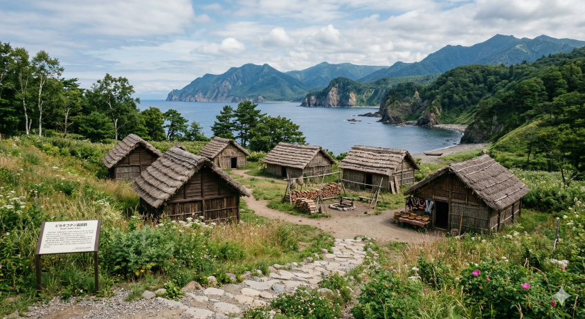
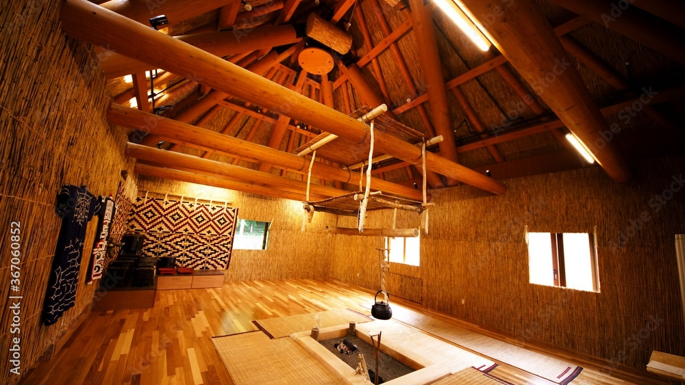
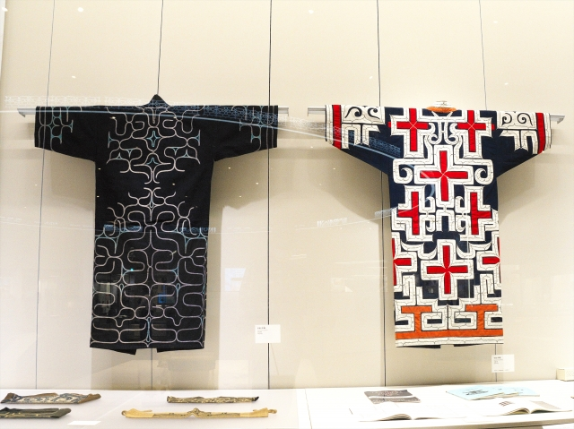

歴史深い文化に
触れる
弥石町は、かつて道内でも有数の規模を誇ったアイヌのコタン（村）が栄えた地です。
町内各所に点在する遺跡からは、当時の生活を物語る貴重な遺物が数多く出土しており、自然を敬い共生してきた先見的な文化を今に伝えています。
復元されたチセ（家屋）や、伝統工芸の体験プログラムを通じて、単なる知識としての歴史ではなく、現代にも通ずる「自然と心の調和」を肌で感じることができる、学びと発見に満ちたエリアです。
-
雄大なる眺望

ビセキコタン遺跡群が位置する地は、古くからカムイ（神）と人間が交差する聖域とされてきました。
集落の眼前に広がる雄大な海のパノラマは、アイヌの人々も同じように眺めていた、弥石町の原風景です。 -
現代に息づく
「チセ」の空間
復元されたチセ（家屋）の中では、揺らめく囲炉裏の火とともに、伝統的な建築技術や暮らしの知恵を間近に観察できます。
木と茅の香りに包まれながら、自然と調和して生きてきた先人たちの息遣いを感じてみてください。 -
祈りを刻むアイヌ文様

博物館の展示品や伝統工芸体験で目にする刺繍や彫刻には、一つひとつに「魔除け」や「自然への敬意」が込められています。
曲線が織りなす独特の美学は、単なる装飾ではなく、弥石の人々が大切に守り続けてきた精神そのものです。